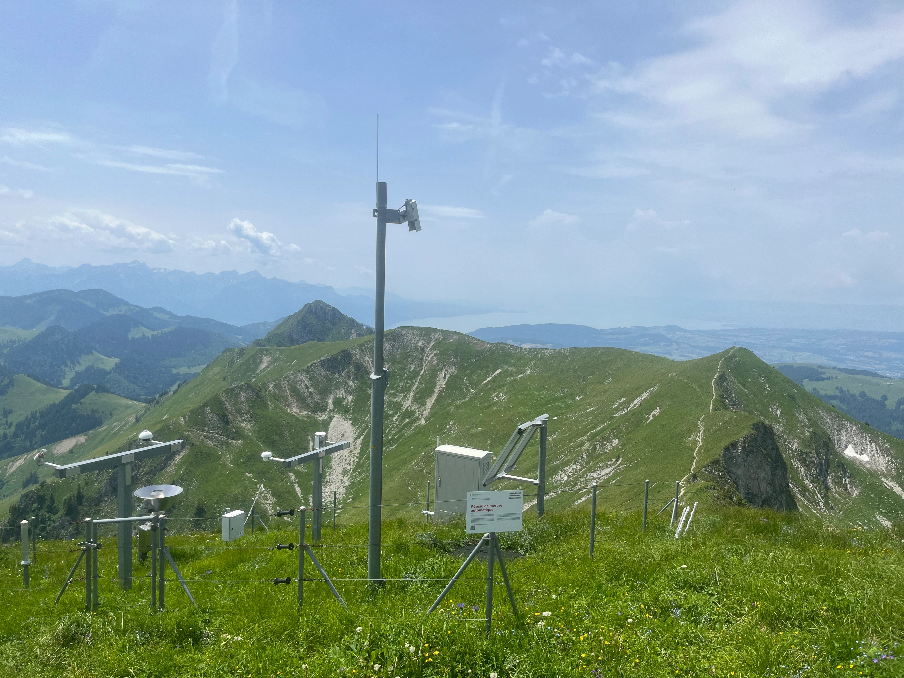

Publications
-

*A 3D geological model of a structurally complex Alpine region as a basis for interdisciplinary research
-
*Efficient multi-objective calibration and uncertainty analysis of distributed snow simulations in rugged alpine terrain
-
*Simulating fully-integrated hydrological dynamics in complex Alpine headwaters: potential and challenges
-

*Toward a definition of Essential Mountain Climate Variables
-

*Coverage of in situ climatological observations in the world's mountains
-

*Human populations in the world’s mountains: Spatio-temporal patterns and potential controls
-
Climate changes and their elevational patterns in the mountains of the world
-
*†Mountain streamflow threatened by irreversible simulated groundwater declines
-
Cryosphere–groundwater connectivity is a missing link in the mountain water cycle
-
Toward a set of Essential Biodiversity Variables for assessing change in mountains globally
* denotes first author. † denotes invited "News & Views" article.
In addition, my PhD thesis is available here.
Professional Experience & Education

Researcher – Flood Risk

Founder
Senior Research Scientist & Coordinator, GEO Mountains

PhD Candidate, Centre for Hydrogeology & Geothermics
Prix Adrien Gébhard-Séverine for an excellent doctoral thesis in hydrogeology
Catastrophe Model Developer & Risk Analyst [full-time]

Master of Science (by Research), Department of Geography [part-time]

Bachelor of Science (First Class Honours), School of Geographical Sciences
The Haggett Prize for best performance in final undergraduate examinations
Professional Contributions